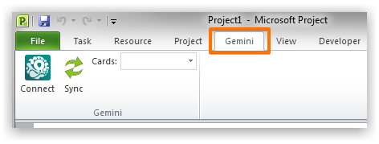
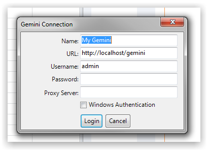
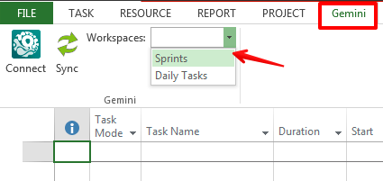
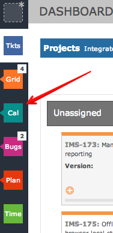
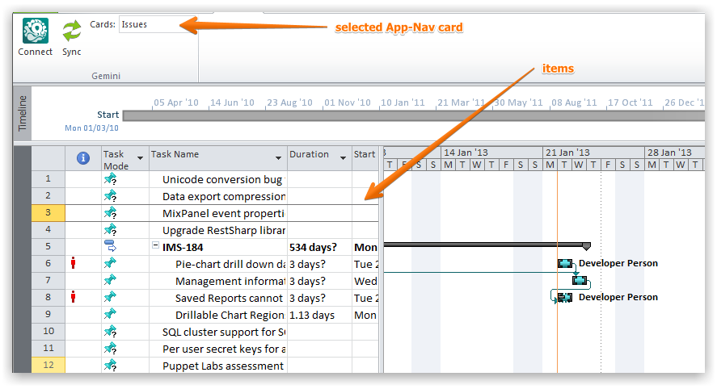
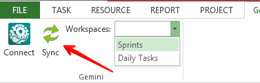
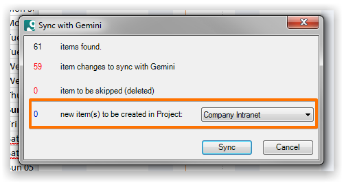

The Microsoft Project connector enables you to view items in a project plan, amend them, create new items and then synchronize with Gemini.
After downloading and installing the connector you should see the Gemini toolbar within Microsoft Project.

Click on the Connect button to login and provide your credentials.

The connector works with items from any saved workspace.

So every workspace you have in Gemini is available to the connector.

Items represented by the card are displayed in the project plan.

You can amend various attributes for every item within the plan or insert new items into the project plan.
All changes must be synchronized back to Gemini. Click the Sync button to start the proces.

A summary of all your changes is provided. You can choose to create all new items in a Gemini project of your choosing.

The changes will appear in Gemini after you synchronize.